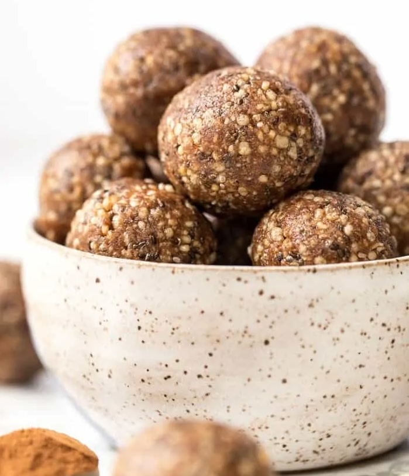

Squiddle Diddles

Squidelly diddelly doo?
These vegan snickerdoodle energy bites taste just like a cookie but are actually healthy and nutritious. They're the perfect snack for anyone on-the-go!
You will need:
- 1 cup dates pitted
- 1 cup nuts* or nut pieces
- 2 tbsp chia, sesame, buckwheat and/or hemp seeds
- 2 tbsp coconut oil
- 1 tbsp nut butter**
- 1 tbsp maple syrup
- 1 tbsp cinnamon
- 1 cup oats or quinoa puffs
- 2 tbsp shredded coconut
- 1 - 2 tablespoons water if needed
*Nuts can be almonds, pecans, walnuts, cashews, etc. Get creative! My favourite is cashews plus whatever other nut I have on hand.
**Same goes for the nut butters, although I highly recommend cashew butter for this recipe if you can get it.
Instructions
- In the bowl of a food processor combine the dates and nuts. Process until they resemble a coarse sand.
- Add oil, nut butter, syrup (if using) and cinnamon, and process until a dough forms. If the dough does not come together, add some water, 1 tablespoon at a time until the dough sticks together when you press it between your fingers.
- Pulse in the remaining ingredients
- Form 1" balls with your hands and place on a parchment lined plate. Chill for at least 60 minutes and then enjoy.
- Keep in a covered container in the freezer for best results, but they will also keep in the fridge.
Link to original recipe:
Simply Quinoa
Home